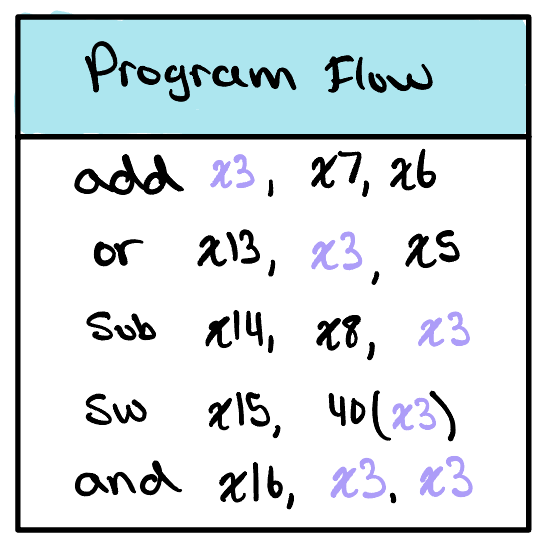
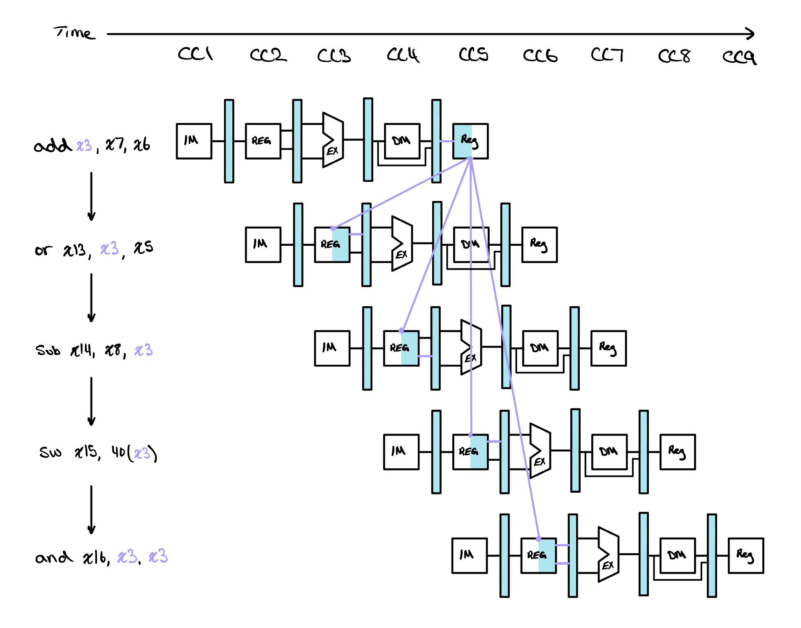
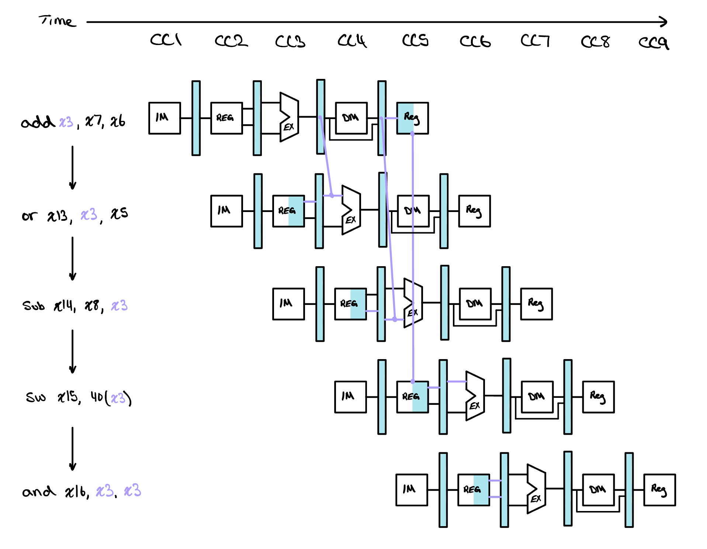
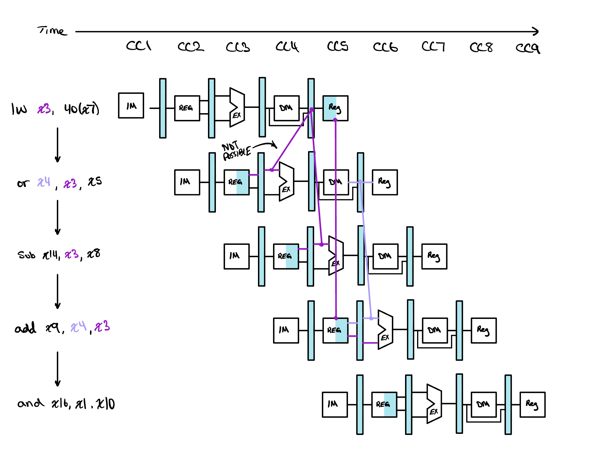
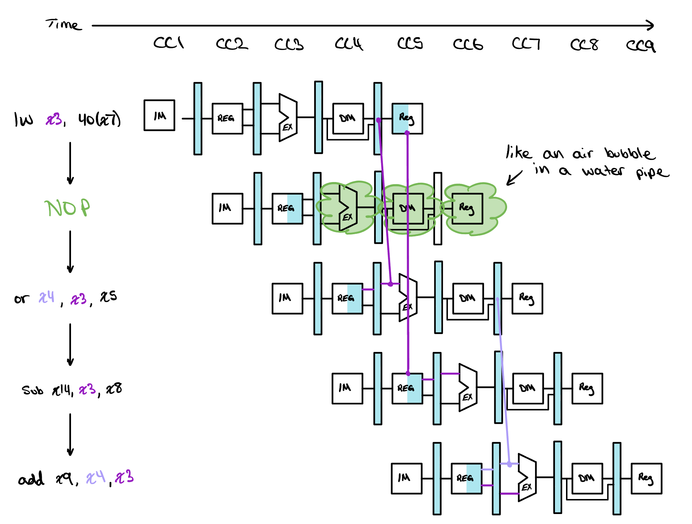
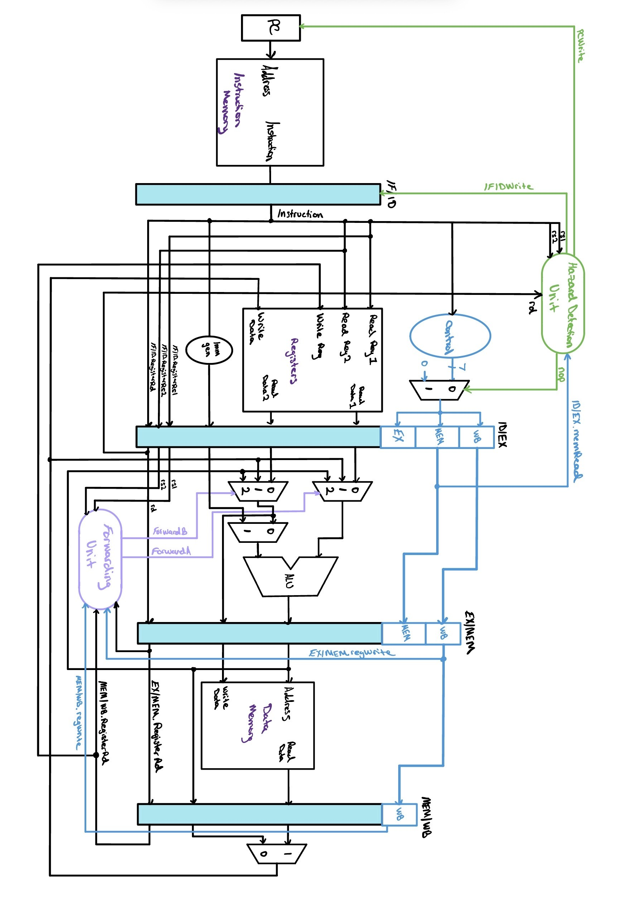
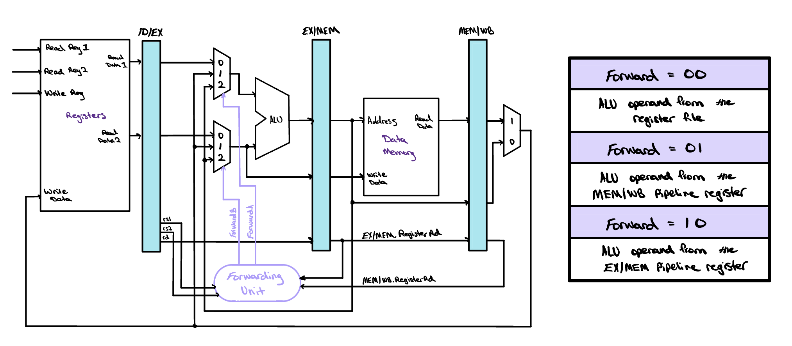

Data Hazards
A data hazard is what happens when an instruction needs a result that an earlier instruction has computed but has not written back yet. The pipeline we have drawn so far will read the stale value and finish the instruction anyway. The fix is not to slow the pipeline down but to notice that the answer already exists somewhere in it, and to run a wire from where it is to where it is needed.

Taking Off Our Rose-Colored Glasses
Every pipeline we have drawn so far has been running a program chosen to be kind to it. Not one of the instructions crossing the datapath in the last two lessons read a register that an instruction still in flight was about to write, so every stage could take whatever the register file handed it and be confident the value was current. That assumption is quietly doing an enormous amount of work, and it is the reason the pipeline has looked free so far. Real programs are not built that way. A step in a program usually exists precisely because it needs the result of a step before it, so instructions that depend on one another are the normal case rather than the exception, and any machine that overlaps instructions in time has to have an answer for them.

Consider the short sequence beside this paragraph. The first instruction, add x3, x7, x6, writes its sum into x3. Every one of the four instructions that follow it then reads x3, and the last of them reads it twice. This is not a contrived program. It is what ordinary code looks like when a value is computed once and then used, which is most of the time.
Now put that sequence on the pipeline and watch the clock. The add computes its sum in Execution during cycle 3, but it does not write that sum into the register file until Writeback, in cycle 5. The or behind it reads the register file during its own Decode stage, in cycle 3, and the sub behind that reads in cycle 4. Both go looking for x3 before the add has put anything there, so both walk away with whatever x3 held before this program started. The pipeline does not stumble or complain. It computes two confidently wrong answers and carries them forward.

The chart beside this paragraph draws the same five instructions against a single time axis, with an arrow from the point where x3 is written to each point where it is read. Two of those arrows point backwards. The or wants a value in cycle 3 that does not exist until cycle 5, and the sub wants it in cycle 4. An arrow that runs backwards in time is the visual signature of a hazard, and it is the fastest way to spot one. The last two arrows are fine. The sw reads in the very cycle the write happens and the and reads a cycle later, and we will see in a moment why the first of those two is safe.
That is a data hazard: an instruction needs a value that an instruction ahead of it has not finished writing. It is worth being precise about what has gone wrong, because it is a timing failure rather than a logic failure. Nothing in the datapath computes the wrong function. The right value is produced by the right hardware at the right stage. It simply arrives at the register file later than the instruction behind it thinks to look.
The Forwarding Unit
We already met the answer, back when we first laid the pipeline out. The trick is to notice that the sum the or needs is not missing. It is finished and sitting at the output of the ALU at the end of cycle 3, a full two cycles before it reaches the register file. The register file is simply not where it lives yet. Forwarding, also called bypassing, is the practice of adding a path that collects a result the moment it exists and hands it directly to the instruction waiting on it, instead of making that instruction wait for the long way around through the register file.
Look again at the two arrows that were legal. The and in cycle 6 reads after the write and needs no help at all. The sw is the interesting one, because it reads x3 in cycle 5, the very cycle the add is writing it. That works, and it works by design rather than by luck: our register file writes on the first half of the clock cycle and reads on the second half, so a read that lands in the same cycle as a write sees the value that was just written. One of the four dependences resolves itself for free, and only the two backwards arrows are left to fix.

Redrawn with forwarding, the chart has no backwards arrows left in it. The sum leaves the add at the end of its Execution stage and travels forward into the Execution stage of the or and then of the sub. Every arrow now points the way time does, which is the whole test of whether a value can be delivered at all. Forwarding cannot rescue a value that has not been computed yet, and that limit will matter a great deal later, but for arithmetic feeding arithmetic it is enough.
Knowing that a wire is needed is a different problem from knowing
when to use it, and the second is the one the hardware
solves every cycle. To state that condition precisely we will name
each signal after the pipeline register it is stored in. A signal
written EX/MEM_rd is the
rd field held in the EX/MEM pipeline
register, the destination of the instruction leaving
Execution for Memory, and
ID/EX_rs1 is the rs1 field
held in the ID/EX register, the first source of the instruction
entering Execution. The prefix says where the value sits, and
because a pipeline register holds one instruction's worth of state, it
also names the instruction it belongs to.
With that notation the two failures in our program become two very
short statements. In cycle 4 the add is in Memory and
the or is in Execution, so the destination of the one
and the first source of the other are sitting one register apart, and
EX/MEM_rd equals ID/EX_rs1. In cycle 5 the
add has moved on to Writeback and the sub
has reached Execution, and since x3 is the second
source of a sub, this time MEM/WB_rd equals
ID/EX_rs2. Both are comparisons between two register
numbers that the pipeline is already carrying, which is what makes
them cheap to test in hardware.
Generalizing from those two gives four conditions, and they fall into two natural pairs. The pair that compares against the EX/MEM register we will call the EX hazards, since the value being forwarded comes from the instruction leaving Execution. The pair that compares against the MEM/WB register we will call the MEM hazards, since the value comes from the instruction leaving Memory. Both sets are beside this paragraph.
Those four are necessary but they are not yet sufficient, and a
forwarding unit built on them alone would corrupt perfectly good
programs. The first gap is that not every instruction writes a
register. A store and a branch both carry bits in the position where
rd lives, because the field is at bits 11
down to 7 in every format that has one and the hardware pulls it out
without asking what the instruction is. Those bits are meaningless for
an instruction that never writes back, and matching against them would
forward a value that was never produced. The cure is to consult the
control the instruction is already carrying and require that
regWrite is asserted in the stage we are
forwarding from.
The second gap is x0. In RISC-V register zero is hardwired to
the value zero and reading it always yields zero, no matter what any
instruction claims to have written there. That makes x0 a
perfectly legal destination for an instruction whose result is being
thrown away, and add x0, x3, x12 is a normal thing to find in
a program. The ALU still computes a sum for it, and that sum still
appears in the EX/MEM register alongside a
rd of zero. If a later instruction reads
x0, the four conditions above would match and we would forward
a non-zero number to an instruction that is entitled to receive zero.
So both comparisons also require
EX/MEM_rd ≠ 0 and MEM/WB_rd ≠ 0.
The delivery mechanism is smaller than the decision. Each ALU input gains a 3x1 multiplexer in front of it, choosing between the operand the register file read during Decode, the value held in the EX/MEM register, and the value held in the MEM/WB register. Two select signals drive them, one per operand, and a small combinational block generates both. That block is the forwarding unit. It sits under the ID/EX register with the register numbers and the write enables running into it and the two selects running back out to the multiplexers.
![The Execution stage redrawn with forwarding hardware. Each ALU input is fed by a 3x1 multiplexer whose sources are the operand read from the register file, the value held in the MEM/WB register, and the ALU result held in the EX/MEM register. A Forwarding Unit below reads rs1, rs2 and rd from ID/EX along with EX/MEM.RegisterRd and MEM/WB.RegisterRd, and drives ForwardA and ForwardB. A table at the right reads: Forward equals 00, ALU operand from the register file; Forward equals 01, ALU operand from the MEM/WB pipeline register; Forward equals 10, ALU operand from the EX/MEM pipeline register.](../../assets/pipelined-cpu/forwarding-unit.jpg)
module forwarding_unit (
input wire [4:0] IDEX_rs1,
input wire [4:0] IDEX_rs2,
input wire [4:0] EXMEM_rd,
input wire [4:0] MEMWB_rd,
input wire EXMEM_regWrite,
input wire MEMWB_regWrite,
output reg [1:0] IDEX_forwardA,
output reg [1:0] IDEX_forwardB
);
always @(*) begin
// defaults: no forwarding, read from register file
IDEX_forwardA = 2'b00;
IDEX_forwardB = 2'b00;
// ---- IDEX_forwardA ----
if (EXMEM_regWrite && (EXMEM_rd != 5'd0)
&& (EXMEM_rd == IDEX_rs1))
IDEX_forwardA = 2'b10; // from EX/MEM
else if (MEMWB_regWrite && (MEMWB_rd != 5'd0)
&& (MEMWB_rd == IDEX_rs1))
IDEX_forwardA = 2'b01; // from MEM/WB
// ---- IDEX_forwardB ----
if (EXMEM_regWrite && (EXMEM_rd != 5'd0)
&& (EXMEM_rd == IDEX_rs2))
IDEX_forwardB = 2'b10;
else if (MEMWB_regWrite && (MEMWB_rd != 5'd0)
&& (MEMWB_rd == IDEX_rs2))
IDEX_forwardB = 2'b01;
end
endmodule
The module costs us one more thing. Before forwarding, the ID/EX
register had no reason to carry rs1 and
rs2 at all, since the register file was
read back in Decode and the values it produced were what
Execution wanted. The forwarding unit compares numbers rather
than values, so ID/EX grows ten bits wider to carry them.
One detail is doing more work than it looks. Each operand tests EX/MEM first and only falls through to MEM/WB if that test fails, which is deliberate. Consider three instructions that all write the same register:
- addi x2, x2, -1
- addi x2, x2, -2
- sub x2, x2, x3
When the sub reaches Execution, the second
addi is in Memory and the first is in
Writeback, so x2 matches on both sides at once.
EX/MEM_rd and MEM/WB_rd both equal
ID/EX_rs1, and the two registers hold two different
numbers. Only one of them is right. The instruction in Memory
is one step ahead of the instruction in Writeback, so the
EX/MEM register holds the newer of the two results, and forwarding
from MEM/WB would hand the sub a value that has already been
superseded. Checking EX/MEM first, and treating a hit there as final,
is what makes the unit pick the most recent write rather than merely
a recent one.
Stalls and NOPs
Forwarding carries one limit that we noted in passing and now have to face, which is that it cannot deliver a value that has not been computed yet. A load is where that bites, because lw x3, 40(x7) has no value until data memory answers at the end of Memory while the instruction directly behind it wants that value at the beginning of its own Execution, in the very same cycle, and that is a load-use hazard.

The chart beside this marks that arrow not possible for that reason, and no wiring will fix it. What fixes it is time. The pipeline stalls for one cycle, and one is enough: the dependent instruction then reaches Execution after the load has left Memory, where the forwarding unit can deliver the value as it would any other. Holding an instruction back is not the same as pausing, because the front of the pipeline is still fetching. We must hold both the program counter and the IF/ID pipeline register, so that we pick up exactly where we left off when the stall lifts. Along the laundry analogy, it is as if we restart the washer with the same clothes still inside while the dryer tumbles on an empty drum. The dryer is the back half of the pipeline, which cannot freeze, because Execution, Memory and Writeback each have to do something this cycle. What they do is nothing, in the precise sense of a NOP, an instruction with no effect. We insert one by setting every control line in the ID/EX pipeline register to zero, so the instruction travelling down the back half writes no register and touches no memory. That hole is called a bubble, and the chart below draws it moving through the stages like an air bubble in a water pipe.

None of that happens on its own, so the last piece is the hardware
that notices. The forwarding unit works from the ID/EX register, which
is one stage too late for this job, since by the time the dependent
instruction has reached Execution the chance to stall it has
already gone. So a second block sits a stage earlier and watches
Decode. It is called the hazard detection unit,
and its test is a single line. The instruction in ID/EX must be a load,
which the control signal memRead already
tells us, and its destination must match a source of the instruction
still sitting in IF/ID, so ID/EX_rd equals
either IF/ID_rs1 or
IF/ID_rs2. When both hold, the unit does
all three of the things above at once. It holds the PC, it holds
IF/ID, and it forces the control lines entering ID/EX to zero. One
cycle is the entire cost, and it is the reason a compiler will try to
schedule an unrelated instruction into the slot behind a load rather
than leave the machine to buy that cycle back at run time.
module hazard_detection_unit (
input wire [4:0] IFID_rs1,
input wire [4:0] IFID_rs2,
input wire [4:0] IDEX_rd,
input wire IDEX_memRead,
output reg IFID_pcWrite,
output reg IFID_write,
output reg IFID_stall
);
always @(*) begin
// defaults: pipeline advances normally
IFID_pcWrite = 1'b1;
IFID_write = 1'b1;
IFID_stall = 1'b0;
// load-use hazard: load in EX, its result
// needed by the instruction in ID
if (IDEX_memRead && (IDEX_rd != 5'd0)
&& ((IDEX_rd == IFID_rs1) ||
(IDEX_rd == IFID_rs2))) begin
IFID_pcWrite = 1'b0; // hold PC
IFID_write = 1'b0; // hold IF/ID
IFID_stall = 1'b1; // zero ID/EX control
end
end
endmodule
Check Yourself
An instruction in the Execution stage reads a register that matches the destination held in the EX/MEM register and the destination held in the MEM/WB register. Both candidates are valid writes to a register other than x0. Which one should the forwarding unit choose, and why?
